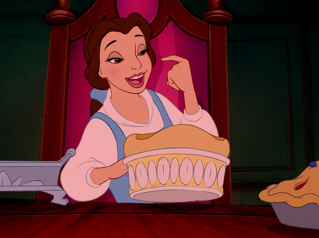
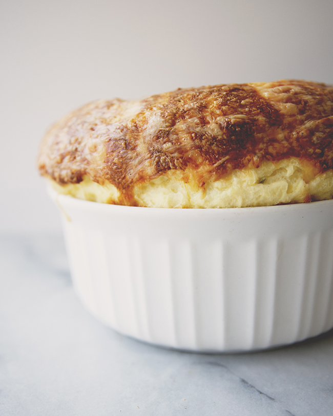

Cheese Soufflé from Beauty and the Beast

Description
The cartoon makes this dish look DELECTABLE.
This is a béchamel soufflé, which means that it will rise to crusty, savory, wonderful proportions, and the best part – you can make it ahead. You can whip this up, pop it in the dish, and let it hang out in the fridge for a day and then bake it off. It’s wonderful.

Ingredients
- 6 tablespoons (3/4 stick) unsalted butter, plus more to butter a 6-cup gratin dish
- 6 tablespoons all-purpose flour
- 2 cups cold whole milk
- 1/2 teaspoon salt
- 1/2 teaspoon freshly ground black pepper
- 5 extra-large eggs, beaten
- 2 1/3 cups grated Swiss cheese, preferably Gruyere (about 6 ounces)
- 3 tablespoons minced fresh chive blades
Steps
- Preheat the oven to 400 degrees F.
- In a medium sized pot over medium heat, melt the 6 tablespoons of butter and add the flour, stirring and cooking for about a minute, until it smells nutty.
Add about 2 tablespoons of milk at a time, whisking to combine. At first it’ll be super thick, but just keep adding liquid and stirring.
You should end up with a thick, velvety sauce. If a little thin, cook and stir it for a few minutes until it reduces, or if too thick, add a little more milk.
Take the sauce off the heat and season with salt and pepper. Taste and adjust if needed.
- Add the eggs, the cheese and the chives to the white sauce, and mix well to combine. Pour into the buttered dish and bake for 30 to 40 minutes, or until the soufflé is puffy and well browned on top. Serve immediately.